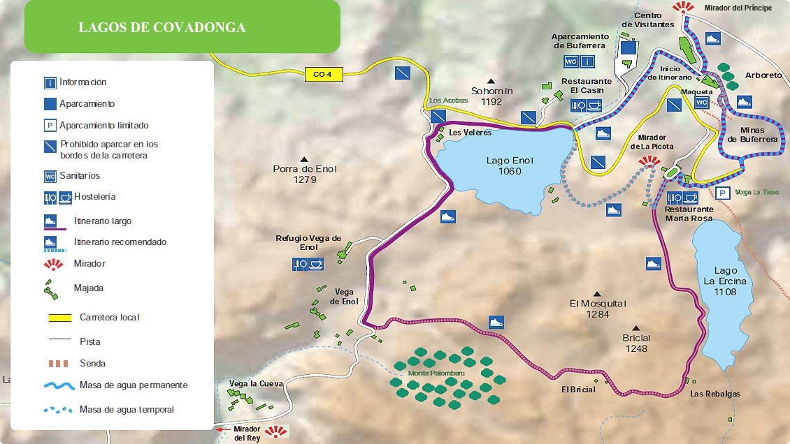

La Santa Cueva está excavada en la roca, encima de una cascada de agua,
donde mora la patrona de Asturias desde hace más de 1.300 años.
Para acceder hasta ella, hay que subir una larga escalera.El complejo de Covadonga incluye un Museo que incluyen grabados, pinturas y objetos de orfebrería que representan la evolución del santuario.
El santuario cuenta también con la Casa de Ejercicios, que es un lugar en el uno se puede hospedar y está ideado para el recogimiento y la reflexión, en un tono claramente religioso.
En el entorno religioso hay además una escolanía con coro.
Rutas desde Covadonga
Para los aficionados al senderismo, desde Covadonga parten dos rutas bastante conocidas:
La Ruta de la Reconquista, etiquetada como de gran recorrido, GR-202 y la Ruta de Orandi, de pequeño recorrido, PR-PNPE-6.
